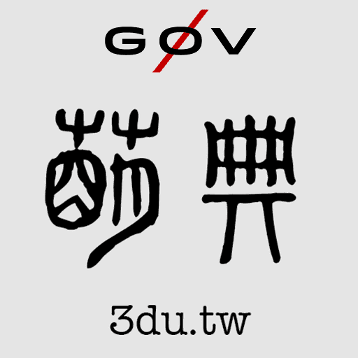

萌 ㄇㄥˊ
草木初生的芽。
典 ㄉㄧㄢˇ
可作為依據或模範的書。
萌典
國語辭典
國語辭典
…分類索引
…部首表
臺灣閩南語
…分類索引
…諺語
臺灣客家語
…諺語
兩岸詞典
…分類索引
…部首表

字詞紀錄簿
我收藏的條目
查閱紀錄
送回編修
萌典
偏好設定
×
條目注音顯示方式
直角共同顯示
直角共同顯示
只顯示注音符號
（方言音）
只顯示羅馬拼音
置於條目名稱下方
關閉
客語注音
預設
預設
四縣
海陸
大埔
饒平
詔安
字詞查閱紀錄
50筆
50筆
30筆
15筆
關閉
（將清除所有紀錄）
搜尋「簡
繁」轉換
避開通同字及異體字
避開通同字及異體字
完全轉換
關閉
關閉